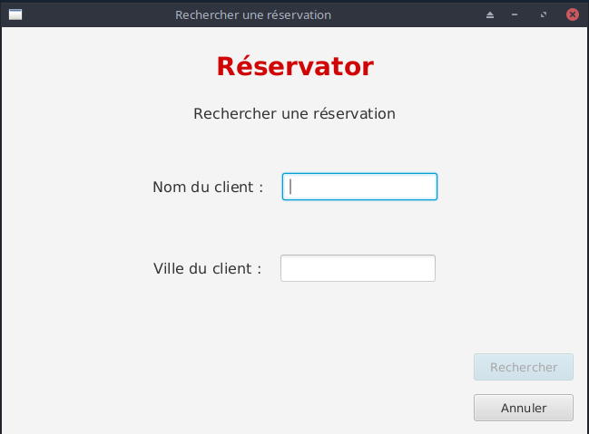

Le but de ce projet était de combiner la gestion de projet et le codage en Java, il fallait à partir d'un document de recueil des besoins établir un cycle de vie classique pour le projet (cycle en waterfall), puis nous avons ensuite codé le logiciel à l'aide de Java et de JavaFx pour l'ihm (interface homme machine).